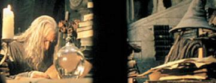

The JAAKSONS: "Laurel"
(Jay and Acacia Kooky Spin-Off Nerd Society)

Summary: There was Nenya, who is called the Ranger-Luster, and Rosie, called the Sam Fan Extraordinaire, and they bethought themselves to join the Protectors of the Plot Continuum, out of love for Tolkien, admiration for Jay and Acacia, and general well-intentioned naiveté. With them came Glorfindal, mini-Balrog of OFUM, and many were the adventures that followed them. The story they tackled in their first mission may be found here.
Chapter 1: "Laurel"
nok nok nok
Two girls stood outside a tall gray metal door. One was a few inches taller
than the other, but still rather short. She had dark red hair and blue eyes,
with glasses that were about three centimeters thick. She was wearing plain
jeans and a black shirt with white...jagged lines, it looked like, or are
those letters? You can never tell. A thin cloak of grey filmy material was
wrapped about her, fastened at the throat with a leaf-shaped brooch that
looks rather familiar.
Her partner was short and rather round, with short brownish-blonde hair that
blew all around her face and got in her green-gray eyes. She wore dark jeans
and a shirt with what looked like monkeys hanging upside down on the front.
She also wore a cloak, nearly identical to the redhead’s, save with a
slightly different brooch, this one looking as if it were hand-crafted. The
two had been worried that the department might not take them on, seeing as how
many Sues have red hair and green eyes, but that was before the short one
had pointed out that they were applying because the poor people were so
understaffed and would take anyone...even them.
Behind them, an altogether frightening beast towered a few feet above the
doorframe. He had all the physical characteristics of a Balrog, but he was
much smaller. His flame-whip was stowed carefully in his belt, and he was
doing his best to look docile. The redhead turned around after knocking and
patted him on the head, though she had to use a rather large step-stool to
do it.
“You sure they’ll let you bring him in there?” asked the shorter one, eyeing
the creature dubiously.
“They better,” her friend replied. “If they don’t want Glorfindal, they
don’t want me. Isn’t that right, Glori-poo?” she asked, hugging the
Mini-Balrog. He nuzzled her with his fiery nose.
The redhead carried a dark blue backpack, a pillow, and a water bottle.
Glorfindal was carrying another black bag of hers. The blonde was
substantially more loaded down, with a larger pillow, a much more
overstuffed backpack, a blue tote bag, a portable CD player case, and
several long tubes sticking out of a rather heavy-looking bag marked “Wall
stuff”. The redhead had just knocked on the door (because she had a free
hand), and since she was an author insertion, it didn’t knock like it would
for normal people, it nokked.
They only had a few moments to wait before a harried-looking wisteria plant
wearing a rumpled track suit answered the door. Yes? it asked in an odd
noiseless voice. If you’re selling something, we aren’t buying... It noticed
the creature behind them, jumped back, and glared. And a
Mini-Balrog...evildoers and friends of Cam! We will not give up any more
agents to her insanity! If you want applicants for OFUM, try Fanfiction.net.
“Er, no,” said the redhead, Nenya, being the first to recover her wits.
“We’re here to apply for a job –”
They never got a chance to finish. Two blue-flowered fronds shot out and
grabbed them, pulling them inside and slamming the door behind them. If
Glorfindal had not had the speed of a Mini, he would have been left behind.
The wisteria locked the door rather hurriedly. Thank God! it non-yelled.
This way...
The sisters found themselves being pulled along a long grey corridor. The
wisteria had curled its fronds around each of their wrists and was cutting
off the circulation to each hand.
“Ow ow ow ow ow....you know, I’m, ow, not going to be much good as an agent,
ow, if I’m missing my right hand, ow!” Rosie tried to uncoil the frond from
her wrist.
Sorry, the wisteria plant apologized briefly, but did not relent. He dragged
them through endless gray hallways until they came to...a wall.
The wisteria let them go and stood there expectantly.
The sisters looked at the wall, each other, and back at the wisteria plant.
“It’s a wall,” Nenya said, earning her a high score in the Hall of Most
Obvious Statements.
Oh. The wisteria looked ashamed. He quickly reached out and tapped a
meaningless pattern on the metal. Suddenly, the girls felt a shove from
behind, and they stumbled into a room whose walls were painted (surprise!)
gray. Glorfindal followed them in and stood over Nenya, his wings spread
protectively about her and Rosie. The door slid shut behind them.
There was a desk in the center of the room, made of some sort of undefinable
gray metal. A swivelling chair was turned away from them.
New recruits? The non-voice sounded almost excited. Can it be?
“Yes it can,” replied Nenya confidently. “We’re here to help you out.”
You sound remarkably sane. The chair swivelled around, and they were met
face to blossom with the famed Sunflower Official, a bizarre-looking
sunflower in a gray suit. It tilted its head up to once-over Glorfindal, and
turned back to the two indifferently.
“God, is everything in this place gray?” muttered Rosie.
I heard that. Well, my dears, come closer.
The sisters exchanged a look, and warily approached the desk.
Two fronds reached out and grabbed them by the chins. Well, you’re
breathing. And you can speak. And you do not appear to possess any
flamethrowers.
“Hee hee....fiiiire....” Rosie’s eyes got big.
The SO raised a petal (eyebrow). I shall choose to ignore that statement.
And that...thing, I assume, is tamed?
“Yes,” Nenya replied proudly. “Glorfindal is very obedient and only cruel to
Mary Sues. He doesn’t eat much – raw eggs, bacon, and the odd fangirl.”
Glorfindal tried not to drool – he hadn’t eaten in at least five hours, and
he was rather hungry. The mention of his favorite snack made his stomach
growl.
Good. And I see by your attire, that if your preferred genre is what I think
it is, that you are very dedicated and know your canon. Very good. Fill out
these forms, and you can start work today. It threw a stack of papers at
them.
“Yes, sir,” they replied obediently. They picked up random pens off the desk
and began scribbling away. Glorfindal amused himself by doing target
practice with his whip on some scattered papers tacked up on the wall of the SO’s
office. The SO looked a bit peeved, but allowed it to pass.
All was quiet for a few moments, until –
“Nenya?”
“What?”
“Am I sane?”
“Compared to Hika...yes. Compared to Mr. Tolkien...no.”
“Ah.” Rosie began to scribble again. Then,
“Nenya?”
“What?”
“What is our preferred area of work?”
“Lord of the Rings. Any genre except slash.”
“Ah.”
After a few moments, they both finished at the same instant.
They blinked.
“Wow...that was a plot hole...” Rosie commented.
Those are abundant around here. The SO snatched up their papers and
organized them in an instant. Good, good, good...REALLY? you’re both an 8 on
the sanity test?!?!?!
“Yes...”
YOU’RE HIRED! The SO threw a pair of black uniforms at them with the symbol
of a spoon in a dish on the left sleeve. Lord of the Rings. Multiple
Offenses department. We’ve only got two or three teams working there. We’ll
channel them so you don’t get any slash. The Mary Sues are abounding,
however. You’ll have quite a few of those. You’ll have to kill a lot...
“Oh, we won’t have a problem with that,” Rosie said, a strange light behind
her eyes. Both the SO and Nenya subconsciously backed away.
Go. Go go go go. Change into these uniforms. The Head of Operations will
take you to your Response Center. Your Mini can stay with you, but he can’t
accompany you on missions...
“The Head of Operations...is that the blue flowered thingy?” asked Rosie,
showing off her remarkable lack of scientific vocabulary.
The wisteria, yes. The sunflower stamped each of them on the forehead with a
rubber thing that said “S.O. Aprroved”.
“Er...you spelled approved wrong,” Rosie pointed out, looking at Nenya’s
forehead.
That’s because I’m special. Now get out of here.
The sisters obeyed, still a bit dazed. They stumbled out the door and
followed the HoO into the ladies’ restroom, where they changed. Then they
were given instructions on how to get to their response center, and left to
survive on their own.
They were still standing in the middle of the hall, dazed, rather
uncomfortable in their starchy black uniforms, with their Elven cloaks that
hadn’t settled down yet dancing around and refusing to be still, with
Glorfindal carrying all of their things, when Jay and Acacia happened by.
Jay and Acacia! If I were to tell you only a quarter of all I have heard
about them, and I only know a very little of all there is to know, you would
be prepared for any sort of remarkable tale. But enough with the corny
swiped lines.
But of course, though Rosie and Nenya had heard of Jay and Acacia and all
their marvelous exploits, they didn’t recognize them, possibly because they
were still a little dazed...that and the fact that the two famous agents were disguised as a
pair of Uruk-Hai.
“EEK!” the shorter (but still remarkably taller than either Nenya or Rosie)
Uruk squealed, grabbing the arm of the other. “JAYJAYJAY! NEWBIES! NEWBIES
WITH A MINI!”
“Newbies? WHERE?” The other creature spun around and stared straight at
them. “YE GODS! IT IS! OHHH SWEET VICTORY!” They grabbed each other and
danced around in a circle, a rather strange sight with Uruk-Hai.
Nenya and Rosie backed away slowly.
“Acacia...”
“Yes?”
“We’re scaring them.” The taller one gestured to the frightened recruits.
“Oh. Silly, Acacia, remember – scare everyone but new recruits.”
Her partner patted her on the head. “Good girl.”
“We’re terribly sorry about the disguises,” Acacia said, turning back to the
girls. “Our console screwed up, so we stayed in our disguises through one of
those free-floating plot holes. We’ll change back as soon as Makes-Things
fixes it.”
“Ah.” The girls did not look much less frightened.
Jay fixed her eyes on Glorfindal, and let out a shriek. “He’s so cuuuute!!!
Ooozagoodboyden! Oh, yes, you are! Yes, you are!” She threw her arms around
him.
Glorfindal looked a bit taken aback. Nenya glared. “Glorfindal’s MINE, thank
you!” she growled, hauling Jay away from her precious Mini.
All of a sudden there was a bang, and then a funny sizzling sound, and then
a pff (onomatopoeia stolen from the Harry Potter/LOTR crossover done by the
original PPC). The world flickered bizarrely before their eyes...
..and instead of two ugly Uruks in full war gear, they were suddenly faced
by a pair of young girls, younger than Nenya but older than Rosie. There was
a tall, gangly one with messy reddish hair and a shorter brunette wearing a
pair of glasses. They both looked like assassins-turned-friendly, the effect
rather disturbing.
“Hi,” the taller one volunteered. “I’m Jay.”
“I’m Acacia.” They both smiled and grabbed the girls’ hands and shook them
vigorously.
“Ohhhh, right!” Rosie said all of a sudden. “The flake with the camera and
the bloodthirsty homicidal maniac! I’ve heard of you.”
“That’s us,” Acacia replied with a smile. “Come on, we’ll take you to your
response centre!” She grabbed Rosie and yanked her down the hall. Jay and Nenya rode
on Glorfindal.
Soon enough, they reached another grey metal door, this one with a knob.
Acacia threw it open and ushered the newbies inside. Jay reluctantly hopped
off Glorfindal’s back.
“This is your response centre,” Acacia said proudly, gesturing to the room
around them. It was gray (wow, big surprise) and metal. There were a couple
of high-backed chairs next to a huge gray mainframe-computer-like machine
with a screen and a lot of interesting-looking buttons and knobs. A rather
tight uncomfortable-looking couch upholstered in scratchy gray material was
set at the other end of the room, and a few cupboards with large doors hung
on the walls. “Get used to it – you’ll live here until they decide to
liberate you.”
Both new recruits looked rather frightened.
Suddenly, a loud “beeeeeeeep” jolted through the air, not from the computer
in this response centre, but from a room down the hall. All four agents
jumped.
“VERDAMMEN!” Jay yelled, and went running down the hall, Acacia following
her. Screams of “What the HECK?” and “I swear, they give us all the hardest
ones!” filtered through the gray metal door, and the sound of something
whacking against metal was followed by the crunching and electronic sizzle
of a computer being destroyed.
A second later there was a cry of “A MONKEY?”
Both newly-recruited agents decided they didn’t want to know.
Nenya shut the door.
Rosie looked at Nenya.
Nenya looked at Rosie.
“Posters?” Rosie ventured.
“You can put them up. I have reading to do.”
“Where are you?”
“Eowyn and Faramir.”
“Cool.”
“These tears you cry...have come too late...take back the lies....the hurt,
the blame...” Rosie sang along with Gollum’s Song as she put up a large
poster of the Fellowship on the door of one of the cupboards. Glorfindal was
sprawled on the couch with Nenya sitting cross-legged in his lap, reading a
part from The Return of the King.
A tear slipped out of Nenya’s eye. “Oh, Rowie, do you have to sing that?”
She wiped her eyes on her sleeve. “I’m gettig by uniforb all wet!”
Rosie rolled her eyes. “Geez, you’re too sentimental for this job.” She
continued singing along with the song playing in her earphones. “And you
will weep when you face the end alone...you are lost, you can never go
home...”
Nenya plugged her ears and began singing at the top of her lungs. “IF YOU
SLEEP, YOU SLEEP WITH GOD...AND IF I CRY, IT’S FOR MY HEART...”
“AIIEEEE!!!!” Rose screeched. “Fine.” With the lightning speed that comes from
years of changing CD's in science class while your teacher’s back is turned,
she had her CD back in its case, stowed safely in her pack, and had the
Matrix soundtrack playing before Nenya had time to get past the third line.
“Du...du hast...du hast mich...” She lapsed into Rammstein from Gollum’s
Song remarkably quickly. She climbed down from her chair, dragged it
over to a designated spot above the console, and began tacking up a large
poster of Frodo with the Ring.
[BEEEEP!]
“Hey, our first mission!” Rosie beamed. She stepped down from her chair and
pulled off her headphones, leaning towards the screen. “It better be
suitably bad...hmm....this isn’t THAT bad...but...OH NO!” She curled up in
the fetal position and began to rock back and forth. “The pain,” she
murmured.
“What is it?” asked Nenya. “On second thought...maybe I don’t want to know.”
“It’s a code 10, hair 27696,” Rosie whimpered. “Remember how you said that
those were usually the worst of all? Let me put it bluntly: THIS ONE IS!
It’s another of those second-daughter-of-Elrond fics – that should tell you
a lot – and ELROND DOESN’T KNOW ABOUT ARWEN AND ARAGORN.”
“Oh Eru,” Nenya muttered. “Now HE, of all people...”
“Exactly,” Rosie agreed as she climbed from her spot and went over to the
console. “What shall we be this time?”
“Uhm...Orcs?”
“Sure – oh, SHIESSE.”
“What?”
“We have to be Orcs,” Rosie said glumly. “We have to infiltrate their ranks
and RESCUE ARWEN EVENSTAR.”
Nenya closed her eyes in exasperation.
Rosie decided that no more words were needed. She reached over and tapped a
button on the console. A weird-looking oblongish
plot-hole-deus-ex-machina-type doorway appeared in midair.
Rosie blinked. “Heeyyy...fun.” She grabbed her pack – containing just her CD
player, her CD collection, and her nifty new Canon Character Analysis
Device, provided by Makes-Things. Nenya had a Non-Canon CAD, designed to
tell who was a bit character and who was a Sue. They couldn’t wait to play
with them. Attached to the outside of Rosie's pack were a sleeping roll, a large Uruk-Hai
bow, and several short thick black-feathered Uruk arrows in a leather quiver. If you looked
closely, you would see that one of them had a couple of Nenya’s hairs stuck under the
arrow-head–on the off chance that they'd actually be hired at the PPC, Rosie had been practicing
with her bow and arrows for the past week. She wasn't yet a perfect shot. Nenya had dodged, but
her hair hadn't.
They both stood before the portal, carrying their gear. There was an awkward
silence.
“You first,” Rosie motioned for Nenya to use the portal first.
“This was your idea.”
“You’re the better fighter. If you fall into an orc-fight, you can defend
yourself better.”
“Thanks a lot.”
Finally, Rosie, being the foolhardy one, gulped, and all of a sudden leaped
through the portal and landed rather solidly on...
...a hobbit’s bedroll.
Something moved under her. A head of curly, sandy hair popped out. A muffled
voice shouted “Hey!”
“Wak!” Rosie hurriedly crawled off the bedroll. That’s when she noticed she
had landed on Sam.
If Nenya had not arrived at that moment and pulled her swooning sister out of Sam’s line of vision, she would have been dead. As it was, Sam sat bolt
upright, yelling “Strider!”
“Yes? What is it?” came a deep voice from their right. Nenya’s face lit up.
Strider came crashing through the underbrush, looking manly, rugged, and
fully the King of Gondor in disguise. Nenya’s mouth dropped open.
“Er, Nenya...it’s Strider...”
“Gleep...” Nenya couldn’t keep her eyes off the ranger.
“He’s...so...smoking...hot...”
Rosie was having similar feelings towards the scared hobbit in the bedroll.
Neither of them were focusing on the conversation at hand.
Rosie snapped out of it when Sam turned away. “Nenya...er, Nen...was this
part of the story?”
“No,” Nenya replied, turning a devilish smile on her. “But I figured neither
of us would mind.”
“Aha.” Rosie grinned, the effect rather frightening on an Uruk-Hai.
“Strider! An orc! It landed on me!”
“What gripping dialogue...” Rosie said glumly. “SAM DESERVES BETTER THAN
THAT!”
Nenya reached out and tapped a few buttons on some sort of electronic thing
in her pocket. The world snapped and fizzled and went pff (onomatopoeia
stolen from abovementioned crossover), and suddenly Sam was sleeping again,
and Strider was sitting on the side, smoking a pipe, humming something in
Elvish, looking thoughtful.
“Ohhhh...” Nenya was out of it again.
Suddenly one of the bedrolls (not Sam’s, to Rosie’s disappointment) stirred.
Frodo’s dark brown curls and (debatably) darling blue eyes popped out. He
watched Strider for a moment in silence, trying to comprehend the elvish
words.
Tinúviel elvanui Elleth alfirin ethelhael
O hon ring finnil fuinui A renc gelebrin thiliol,
Strider sang, confusing Frodo slightly, and sending Nenya into swoons of
ecstacy.
“Who is she?” Frodo spoke up, looking up at Strider.
Strider looked puzzled. Frodo elaborated. “This woman you sing of.”
“He’s so hot when he’s puzzled...”
“Mmmm....” Rosie replied dreamily. She was something of a Strider fangirl
herself, though her real loyalties lay with Sam.
“Tis the Lay of Luthien. The Elf-maiden who gave her love to Beren, a
mortal,” Strider replied sadly.
“Lay of LEITHIAN, damn you,” Rosie muttered to no one in particular. “If it
hadn’t been for certain things such as ‘lawsuit’, I’d be afraid they’d send
us to exorcize the movie one day.”
“What happened to her?” asked Frodo curiously.
Strider looked away. His face bore a hint of tears (at least according to
the FOTR SE DVD transcript). “She died.”
Frodo looked surprised and sad. Strider turned back to him. “Get some sleep,
Frodo.”
Frodo burrowed back under the covers and tried to sleep. Strider continued
looking thoughtful and humming, blissfully unaware of the pair of Uruk-Hai
standing there, ogling him.
After a moment, Rosie got up and walked around to see what Sam looked like
when he was asleep, while Nenya crawled closer to Strider to inspect the
pipe he was smoking. She then nicked the extra one out of his pack and began
kissing it.
Rosie was inspecting Sam’s frying pan. She was seriously considering
snitching it, until she remembered a few words, like “Movie-Verse” and “The
Frying Pan of DOOM”. She settled for inhaling the Samwise’s-cooking-smell
deeply, rubbing it all over a handkerchief, storing the handkerchief in a
plastic bag and placing it carefully it in her backpack, and regretfully
fastening the frying pan back to his pack.
She crawled back to Nenya and tapped her on the shoulder. “Er, Nenya...”
“Wha?” Nenya was in a daze because she thought she'd heard Strider sighing something
to himself about liking red hair.
“Don’t you think we ought to get going? I’m not exactly keen on the idea of
following a Ranger for two weeks weighted down with fifty pounds of Uruk-Hai
gear...”
“Oh, yes, certainly.” Nenya sighed and regretfully bade the oblivious
Strider farewell. She was about to open a portal when she turned to Rosie
with a pleading look.
Rosie sighed. “What now?”
“Pleeeease can we see Strider at Weathertop?”
Rosie brightened. “Sure!”
Nenya entered the info into the activator. A moment later, a portal
flickered into existence. Through it could be heard the sound of Nazgul
screeching, and they both spied a single dark figure, sword drawn and
glinting in the light of the moon, running up the side of a hill, the top of
which had the remains of a tower on it.
They looked at each other, grinned, and stepped through.
Frodo was invisible. Five Black Riders stood over him, one with a sword
jabbed into Frodo’s invisible shoulder. The blood was visible, and the
effect was rather disconcerting.
“Eww...” Rosie wrinkled her nose.
All of a sudden, there was a Rangerish yell. Strider leapt into the
clearing, brandishing a fiery branch and a sword.
Two invisible Uruks crumpled up in a dead faint.
The dead faint, however, became a little less dead when a hobbit stepped on
Rosie’s stomach.
“Oof,” Rosie mumbled. She woke just in time to see Strider clashing swords
with the third Nazgul.
She awoke Nenya, and the two stared, openmouthed, as the Dunedan fought off
the five Wraiths singlehandedly.
After it was over, they sighed resignedly and opened a portal to the OC’s
entrance into the story.
“Laurel!” Arwen cried, running towards her sister, her dress flowing behind
her as she moved quickly over the wet ground, sparkling with morning dew.
“Oh, God, NOT a ‘flowing dress’...” Rosie dropped her head into her
hands and fell to the ground.
“Arwen’s sparkling with morning dew,” Nenya mused, as she studied the Elven
maid clad in a flowing gown that was covered with iridescent dew drops.
“That’s rather odd.”
“At least it’s not the Mary Sue,” Rosie mumbled. “Thank God for small
favours.”
Laurel looked up from her writing and saw her sister, Arwen. “Sister, is
someone hurt? Is father all right?” she asked, standing up.
Rosie peeked at the writing pad the Sue had disregarded and read a few lines
of what she was writing. She began to cackle.
“What?” asked Nenya warily.
“These Sues are stupider than I thought. Look at her paper.”
Nenya peered at the dropped writing-pad, careful not to let the OC notice
her. “‘Legolas is like, so hot and I’m like, so going to marry him when he
like, so totally falls, like, madly in love with my beauty and
perfectness...this story is, like, going perfectly!’ Oh Eru!”
“Exactly.”
Arwen took a deep breath, and spoke, her eyes glimmering. “Yes. Father is
fine. But, the fellowship will be arriving soon, with news.”
“One for the charge list,” Rosie muttered. “Causing the Fellowship to ARRIVE
at Rivendell, already a group of Nine. In other words, sidetracking the
whole fircken Quest just to please their little Mary-Sue whims.”
“It’s not that bad, yet,” Nenya allowed, watching curiously as the dew drops
all over Arwen began to run down to the ground, soaking her dress. Arwen
seemed not to notice.
Rosie did not reply. She was too busy beating her head against a handy tree.
Nenya borrowed her Character Analysis Device, and held it towards Arwen.
[Arwen Evenstar. Elf female. Canon. Out of Character 14.4%]
“Well, that isn’t so bad,” Nenya ventured. Rosie just continued beating her
head against the trunk.
Laurel nodded. Arwen practically danced. “Aragorn is coming. But, you
mustn’t let on to father about us.” Arwen said mindfully.
BEEEEEEEEP!
The younger elf looked up. “What was that?”
“What was what, dear sister?”
The beep became more shrill.
“Shiesse!” Nenya hissed, fumbling for the mute on the device. She pressed it
just as the Sue began to get up. She ignored the next story lines as she tried to
read the text on the tiny screen.
“How bad is it?” Rosie moaned.
Nenya simply handed her the muted CAD.
[68.41 CHARACTER RUPTURE!] the screen flashed. Even with the mute on, it
still was forced to let out a tiny bip...bip...bip at the horribleness of
the scene.
Rosie rolled her eyes and stashed it back in her pack. “This is really,
really bad. I mean really.”
They both, unfortunately, remembered their duty just in time to see Laurel
(gag) wandering by on the path that was lit by “eerily romantic” light,
humming a truly awful lullaby.
“Oh, ye gentle prince, upon the shore, come bring to me your wondrous gift.
Of simple rose and spring’s soft dew, captured skillfully on the ivy.” she
sang in her (VERY debatably [it sounded like a hoarse cow trying to imitate
Brittany Spears]) melodic voice.
Nenya was quietly sick in a bush, while Rosie rocked back and forth
muttering “Sam will save me, Sam will save me” to herself.
“Celebrian would never sing something that horrible,” Nenya muttered weakly.
“But then again, Celebrian would never fall in love with –”
Rosie stopped her. “I really, really don’t want to know...”
“No, you’re right, you don’t. Never mind.”
Rosie pulled a pad of paper out of a plot hole and began scribbling.
“Writing really bad songs and blaming it on Celebrian...being a second
daughter of Elrond...what else have we missed?”
“Causing noble, honourable Elf-ladies to behave like human teenagers with a
crush....oh, and causing Aragorn and Arwen to have a secret love affair.”
“Yes...YES.” Rosie nodded approvingly. Her pencil scribbled across the
yellow legal sheet.
“What a beautiful voice you have. May I ask your name?” A voice interrupted
the Mary Sue’s song, to the extreme relief of the PPC agents.
Laurel turned around quickly. She saw a man standing there. He had silvery
hair, the color of the moon, and from what she could make out deep blue
eyes. He stood tall, with a regal pose, and soft elfin features.
Both agents heard a rrrip, as if in a heavy fabric.
“What’s that?” asked Rosie, turning around.
“Just a major rip in canon,” Nenya replied, studying her Device. “New
Mini-Race. Thousands of half-sized Balrogs trying to get through the curtain
of bad-writingness to get to Cam.”
Rosie moaned. “Elfin? ELFIN?”
“Not to nitpick,” Nenya added, while rifling through the contents of her
backpack for her CD player to numb the pain, “but Legolas is not a man, and
being a daughter of Elrond, she should know that.”
“Charge list!” Rosie hurriedly pulled out the yellow pad and scribbled.
“Charges D9 and E2!” Rosie had made it her business to know the Official
Charge List off by heart.
“Whatever,” Nenya mumbled, pulling out a CD player. “Shiesse! Neither Lianna
Klassen nor Enya are loud enough to drown this out...do you have any harder
stuff?”
“Uhh, I’ve got...Creed, Rammstein, Our Lady Peace, Delirious and Avril
Lavigne,” Rosie replied, rummaging through her things.
“Gimme,” Nenya ordered, holding out her hand, not really caring which band
she got. Rosie handed over Weathered.
“Wait, one of us has to take notes,” Rosie protested, as Nenya jammed on her
headphones.
“Can you do it? I’ll take the banquet...”
Rosie scanned the Words. “Okay...but you have to take the walk with Legolas
in the morning, because the walk in the garden is exceedingly painful...”
“Fine by me.” Nenya was already lost in Bullets. Rosie suspected that if her
sister had bothered to check the words, she would not have agreed so easily.
But there were reasons why Rosie had considered her alternate personality as
a candidate for the Ultimate Evil.
Rosie turned back to the story, pen and legal pad in hand and ready for
battle – to find out that through a cruel and unsummoned plot hole, she had
missed nothing through her dragged-out-in-hope-of-missing-the-painful-parts
discussion with Nenya.
“My name, sir, is Laurel, daughter of Lord Elrond, sister of Arwen.” Laurel
replied, bowing shortly. “May, I have yours?”
“Legolas Greenleaf.” he said, bowing too. Laurel smiled slightly. “Are you
part of the fellowship?”
Rosie groaned. Several charges came to mind, and she began to scribble
furiously.
She scanned the Words up to where Nenya was supposed to take over. It seemed
excruciatingly painful, and there weren’t enough charges to have to be there
as they happened. Rosie hurriedly scribbled down a few charges, such as
charge C 1.3 and Making Greenleaf a Last Name, and then pulled out a
Discman, a pair of earphones and the treasured Human Clay.
When she could almost feel the spare litmus paper in her pocket turn red,
she took them off and listened.
“When I was born, it was prophesied that I would contain a secret. A secret
that only the one who truly loves me can reveal. No one knows what this
secret it, but they know this curse. It’s a curse of the Heart, I believe.
It’s very rare, and when the secret is revealed, it overcomes the bearer
until it is fulfilled. If it’s not fulfilled by a set date, the carrier of
it dies, and evil succumbs the world for one thousand years. The reason you
have never heard of me, is because my father fears for my life. He fears the
prophesy and has kept me under strict surveillance until now.” Laurel
finished.
Ah, the cruelty of life and Laws. “At least she has a decent, albeit
fairy-tale-ish and deus-ex-machinic, excuse for never being mentioned in
canon,” Rosie murmured, wishing with all her heart that she had made Nenya
take this part. “So who cast this curse in the first place, anyway? And why
is she telling this random Elf, who she knows nothing about, everything
about her deepest darkest secret?” She started humming Army of Love to take
away some of the pain.
Legolas stared at her for a moment, not knowing what to say. “A few chosen
people know of this, but as it comes into existence, more will know.” she
continued.
“We are not the enemy, we are here to–oh, bloody hell. This cannot be this
bad....”
“How did you come to get this secret?” Legolas asked, sitting down on a
stone wall, next to a garden of peonies.
“My mother’s side of the family is said to be part enchantress, part fairy
and part elf. Something when this sort of blood is mixed, it causes a curse
of this.”
“It’s this bad,” Rosie groaned. She began methodically beating her head
against the stone wall on which Legolas was seated. Luckily, the Elf was too
taken by the Sue’s magical enchanting I’m-so-beautiful-I-strike-you-dumb
powers to notice.
“But why not to Arwen. Why you?” he asked.
“Arwen is perfect. I would never wish something such as this upon her. But,
since you ask, I have no idea. I do not think anyone will ever know. It’s
like why do I have brown hair instead of blue or green. And why do I have
golden hair instead of brown, fiery orange or sable? Simply, because it just
is.” Laurel finished.
“I wonder,” the PPC agent muttered, squinting and trying to make sense of
that paragraph. “Brown hair instead of blue or green...golden hair instead
of brown...am I the only one that confuses? Or maybe her hair’s changing
colour as she goes...and, by God, don’t insult us golden-heads!” Rosie
absently twirled a strand of her own frizzy golden-brown locks (which looked
quite out-of-place on a dark-skinned ugly creature) around a warped Orc
finger.
She glanced ahead a little bit, and winced. She poked Nenya, who had fallen
into a bit of a doze. “This is your
ballgame, Nen, I need some sleep. Gimme the CD, I need something to wash my
brain out with.”
Nenya woke up after a few jostles. As the redhead was a heavy sleeper, Rosie had
to take off her sister’s earphones and practically yell into her ear to
get her on her feet.
Before hauling off to the woods to set up her sleeping roll, Rosie glanced
ahead in the Words, as was her habit. She mumbled something about ‘shut off
the volume, it’s an Aragorn sex-change,’ and headed out.
Nenya rolled her eyes and trailed after the Suvian and her Elven prey,
humming the dreaded If You Sleep just because Rosie wasn’t around. Then she
glanced up...and blinked...and blinked again. The Mary Sue was trying to
‘cast her eyes over her retreat’. With another glance at the words, it
appeared she was also trying to create a painting inside her head, while
Legolas attempted to see himself in spoken words...The effect was a
maddening swirl of words in a paisley pattern.
Nenya shook herself to clear her head, and ignored the next few lines as she
fished for silly putty in her bag. Silly putty was Nenya and Rosie’s
official means of sanity; it worked very well when one was tense, impatient,
or just plain ticked. The redhead began methodically working it over in her
hands as she hung out inconspicuously in a corner of the great banquet hall
that had suddenly appeared in the Last Homely House. Perhaps it was the Hall
of Fire, but it was neither dark nor particularly song-and-poem-like, and
there was no fireplace.
Out came the charge list.
A sudden break of tension signified the Sue breaking company with Legolas;
suddenly, the inexplicably golden-haired Elf was momentarily released from
bondage as Laurel abandoned him to go and speak with her father (who looked
pained at having to deal with another unexplained second daughter) and ‘Lord
Aragorn’ (who looked wary of this strange new menace). He wandered away,
dazed. Nenya, feeling for him, gave him a pat on the head and a whispered
assurance that it would be all right. He relaxed. Unfortunately, he was
called on again presently, to talk about random boring things with Elrond as
the Mary Sue displayed her patience and endurance as she listened politely.
“Lord Elrond.” Legolas was saying, giving the Elf a stiff bow (as he was
very well aware it was not needed). “Lady Laurel.”
Laurel nodded back, and affixed a serene smile to her face. She watched as
her father and Legolas talked. She stood quiet, and did not show her boredom
as she had been taught to.
“And did not show her boredom...as she had been taught to...she had been
taught to show her boredom?” Nenya started giggling madly, thanking God that
Jay wasn’t here to see Elrond being depicted as such a teacher.
As nothing interesting was happening for an undefined amount of time, Nenya
aimlessly scanned the room for any elves she would happen to know...
..and laid eyes upon a magnificent golden-haired grey-eyed Elf, standing in
the corner and speaking with some friends, completely unaware of any Suvian
influence beyond the regular distortion the presence of a badly done OC adds
to the environment.
Glorfindel.
Nenya’s heart nearly stopped. The Elven warrior was her reason for being
accepted to SNAOL. Her Mini-Balrog was named for him. He truly was a great
Elf...If only she had more time to speak to him. Perhaps, next mission, if
she pushed for Elven disguises...
An ear-piercing shriek roused the hall and nearly split the PPC agent’s
eardrums. A perfectly-manicured finger pointed at Nenya, and a gratuitous
daughter of Lord Peredhel screeched “THERE’S AN ORC IN THE HALL!”
“Bloody hell!” Nenya cried, dashing for the exit before she was seen. Bad
Nenya! her rational mind yelled. You know Upstairs frowns on drooling...And
NOW look where it got you!
She managed to make it outside the doors before they caught her, utilizing a
handy plot-hole that she’d found near the Sue. So, as the Elves rushed past
her searching for the mysterious Orc, no one noticed her, even though she
was calmly leaning against the side of the building.
The Sue, of course, stayed inside and directed things. When no orc was
found, every Elf suddenly was returned to their proper place, and the story
carried on as it had before.
In a few seconds, Nenya had to hide herself in the bushes and take notes as
Arwen and her pseudo-sister giggled together like a couple of teenagers. All
of a sudden, through a quirk of description, the very darkness rustled.
Very abruptly, the scene shifted from a nighttime outdoors to mid-day in an
Elven bedchamber.
Nenya blinked. The change was so sudden, she had to cover her eyes for about
five minutes until they would adjust to the bright sunlight shining through
the windows.
“Wha-hop?” Rosie asked sleepily, yawning as she came up behind her sister,
the quick transportation a result of their last remaining available plothole.
“Good morning. Darnit, Rosie, that was our last plothole! The Sue just heard
a rustling and suddenly it changed to day, for no real reason whatsoever,”
Nenya replied, firing off three different topics in the same sentence with
practiced ease.
“Thank you. Sorry, I needed it. You know I can’t think in the mornings.
Lovely, now she’s interrupted a nice dream about Sam. May I have the honour
of murdering her?” Rosie yawned, replying in kind.
“Be my guest...I’m not one for blood.”
Rosie made a strange face. “Neither am I. Only the blood of Sues, especially
ones after Legolas.” Rosie had been a Legoluster once upon a time, and old
habits are hard to break.
They both turned their attention to the scene, just in time to see the Sue
wake up from a long fitful sleep to see Elrond suddenly appear by her bed,
where he had apparently been ‘anxiously pacing’ for some time. Rosie
suspected he didn’t want to have any more to do with this Sue than he had
to, and had made use of a plothole she’d left behind.
“Laurel, my daughter. You’re awake.” Elrond said. “You’ve been asleep for
only one day, but I was worried.”
Laurel smiled slightly. “I’m all right, father. Is Arwen not with you?”
Nenya rolled her eyes. “I don’t think Arwen’s gained invisibility powers in
the last day...”
Elrond was silent for a long time. “Arwen, was taken.” He finally said.
“Taken! Where?” Laurel cried, sitting up.
“Calm yourself, daughter. She was taken to Isengard.” Elrond said.
Nenya glanced at the Words, and grimaced. “You were right. Arwen’s been
‘kidnaped’, apparently with no one noticing, not even our ever-alert Sue.
And apparently, for some unknown reason, they ignored her and just took
Arwen...”
Rosie winced. “Brace yourself, here comes the .2 seconds in which she speeds
ahead two and a half days...”
Nenya grabbed ahold of the nearest delicately-carved pillar.
“Get your rest. You’ll need it.” He said, then left, closing the door behind
him.
Suddenly, with a glittery pink asterisk and a nauseating time-separator, the
room gave a spine-tingling jolt, threw both of the agents across the room,
and then settled calmly back in place. The Sue, of course, remained
unaffected.
“Ow...” Rosie groaned, as she pushed herself up. “Dammit. Put down some
Temporal-Spatial distortions, would you? Try charge B 1.”
Nenya obediently got out the charge list from her position half-suspended about four
feet off the floor in the arms of a large decorative candelabra. The redhead was gifted
with the ability to read or write in any position at any time, something Rosie greatly envied.
Then the blonde was forced to make a dive for cover under the Sue’s divan as
she realized that they were no longer hidden. Had a second more passed, and
had Rosie a fraction less of the instincts of being raised in a family of
six children, she would have been seen. Nenya, however, was pretty much
hooped.
Luckily, Laurel didn’t notice her right away, and she had time to slip down
and join Rosie under the Elven bed. “That was close,” she whispered to her
sister. “And you aren’t really blonde, you know. There’s more brown than
there is blonde.”
“Quit reading the narration, it’s annoying,” Rosie replied. “And it sounds
better to say ‘blonde’ than it does to say ‘golden-brown-haired person’.”
“Golden hair is very Suvian. Wouldn’t it be easier to call you a brunette?”
“So is red hair,” Rosie pointed out. “And I don’t like that word, brunette.
Sounds like some sort of fish-catching device.”
Nenya looked at the words and groaned. “Can I tune out for a bit, Roslyn?
This is nauseating...”
Rosie glared at her. “No. You promised, remember?”
Nenya rolled her eyes. “Fine.” She clutched the charge list and handed Rosie
her pack. Then they both grabbed ahold of the passing plot hole that Laurel
had used to get out to the garden in a matter of nanoseconds, and were
pulled out over Rivendell and dropped about five metres away from the Sue.
Both managed to land so as not to attract attention, and then Rosie pulled
out her CD player and two custom CDs their brother had burned for her. She
slipped in the first and tuned into Jesus Freak. “Separated, I cut myself
clean,” she started humming.
Nenya left her oblivious sister sitting in the midst of an Elven paradise
(there WERE perks to this job), and singing rather off-key, and followed the
wandering Laurel around, plugging her ears so she wouldn’t have to listen to
the ‘random poems’ the Sue made up.
Suddenly, with no warning at all, Legolas appeared randomly at her side, and
delivered his line “Good evening, again,” with a glazed look in his eye.
Nenya winced in sympathy.
Laurel whirled around to face Legolas. “You, sir, have a habit of following
me, don’t you.” She said, a smile tugging at her lips.
Legolas shrugged. “It could be that we just happen to be at the same place,
at the same time.”
Nenya looked around for a handy wall, found none, and settled for beating
herself over the head with her Official Handbook. She continued in this
manner until finally, the Laws of Narrative Comedy decided to take pity on
her and ended the scene early.
“Hey! Unfair!” Rosie protested, hoisting herself up from her comfortable
seat. “How come the Laws didn’t do that for me?”
“I’m *special*.” Nenya stuck her tongue out rather childishly. “Besides, I
read the scene in advance and documented all charges.”
Rosie glared. “Fine. So, can we kill her now?”
“Let’s wait till she sidetracks the whole Quest AND invites herself along.”
“She’s already done that...” Rosie fingered her crossbow anxiously. She
wanted blood.
“No, Ros.”
Rosie grumped. “Okay, okay.” Temporal distortions always put the
precision-loving Rosie in a bad mood. “And we can skip the very painful talk
with Elrond. We can get her as soon as she sets out – she’ll be alone and
unprotected. Except for ‘light Elfin armour’, which, since it’s
non-canonical and not Elven armour, should be easy to shoot through.”
“What about her bow, ‘bundle of arrows’ and sword?”
“I’ll sneak in and –” Rosie paused, considering her own remarkable lack of
grace. “On second thought, you sneak in, handcuff her and hold her, and I’ll
charge and shoot her.”
“Fine by me.”
Rosie hoisted her pack higher on her back. “Lessgo.”
They reached the spot on the road just out of Rivendell by way of portal,
just as the Sue was approaching on horseback. Rosie cursed silently – she
hadn’t been counting on a horse.
Nenya just hid behind a rock and waited. Rosie shrugged and did likewise.
As the Sue clipped past on her horse, she suddenly sensed some sort of enemy
presence. Stupidly, instead of riding away, she dismounted and looked around
for it.
Nenya took this opportunity to leap out, grab her by the wrists and hold her
down with one hand while she searched for the handcuffs with the other. The
horse very wisely bolted.
“What are you doing?” she screeched, trying to wrestle free. “Let me go!”
Nenya just clipped the handcuffs on and held the girl in place. “Rosie,” she
called. “It’s your cue.”
“You’ve got no right to do this to me!” Laurel squealed, throwing a typical
Suvian tantrum. “I’m a daughter of Lord Elrond! I’m a princess of
Rivendell!”
“Like hell you are,” Rosie said calmly, stepping out from behind a clump of
trees to the right of the path. “My dear, Elrond has a total of one
daughters, and if you think that we can let you force your way into this
wonderful family, you’ve got another think coming. I’ve got some charges for
you.” She pulled out the charge list, which was rather long indeed.
“But you can’t do this!” she wailed. “Everything was going perfectly until
you showed up! Oh, Leggy, my Leggles, saaaaaave me!”
“Shut up,” Nenya replied calmly. “Rosie?”
Rosie cleared her throat and adjusted her spectacles. “Ahem. Laurel (Kudos
to you for having only one short, bearable and almost Elvish name), you are
charged with *deep breath* Being a second daughter of Elrond, writing really
bad songs and blaming it on Celebrian, causing Aragorn and Arwen to have a
secret love affair, causing noble, placid Elf-ladies to behave like a human
teenager with a crush, having a voice like a sick cow imitating Brittany
Spears and making Legolas call it beautiful, doing away with Elladan and
Elrohir, covering Arwen in dewdrops (Quit glaring, Nenya, it’s a charge!
*deep breath*), charge D 9 – causing an original character to have an
unbearably beautiful voice, charge E 2 – displaying extreme stupidity,
forgetting to separate your paragraphs, saying things that make absolutely
no sense whatsoever, making Greenleaf a last name, charge C 1.3 – creating
non-canonical races such as fairies and enchantresses, having contradictory
hair, replacing the Hall of Fire with some strange banquet hall, charge A
1.4 – causing a character to act like a lovestruck fool, especially over an
original character, charge B 1 – Causing time compression, *breath* And,
last but not least, charge E 1 – REALLY annoying PPC agents.*” Rosie glared,
stepped back, and drew her crossbow.
“What are you do –”
*tzzing*
*thunk*
Rosie walked forward and pulled the arrow out of the Sue’s forehead.
Remarkably, Sues didn’t bleed when killed; they only let off small puffs of
glitter. Rosie examined the arrow, and stowed it in her pack for a souvenir,
as the first Sue she had ever killed.
Nenya slung the body over her shoulder. “What should we do with her?”
Rosie thought a moment. “I always heard that the Cats of Queen Beruthiel
were rather vicious when around spawns of the Enemy.”
Nenya smiled rather evilly. “Yes. Portal?”
The blonde pulled out a generator and tapped in the coordinates, and watched
bemusedly as Nenya dragged the dead willowy character with confusing hair
through the oblong door. She then followed, and the two watched
satisfactorily as a group of clawed felines ate their dinner.
Then Rosie borrowed the generator and created a portal back to Headquarters.
The two stepped through, and felt that rippling change of form that always
happened when you changed from one being to another. Instead of two Uruk-Hai
standing there, there were two sisters in Elven cloaks carrying backpacks.
There was an excited “Grrraarrr!” from the corner, and Glorfindal leaped out
and hugged them both tightly.
They grinned at each other, and, just as if they were veteran agents back from their hundredth
mission, dropped their things on the floor, flopped onto the couch
and went to sleep.
Unfortunately, the computer refused to leave them alone.
BEEEEEEEEEEEEEEEP!
“Utumno agar tummen!”
Rosie’s A/N: Well, it’s finally done! Nenya’s been on my back to finish
this ever since she finished her chapter and posted it. I’d been putting it
off; however, adding Luxury, Jay and Acacia to my MSN list and actually
getting to *talk* to the heroines inspired me greatly, besides the fact that
they hinted at a new chapter coming out soon. Happiness is oh so wonderful!
Oh, and the fact that Nenya’s coming home in two weeks helped too! :D I am
ecstatic. The only reason I’m not bouncing off the walls is because I
haven’t eaten any sugar in the last week, specifically to keep myself calm.
Oh, and ‘Utumno agar tummen’ means ‘bloody hell!’ in Elvish. :D
Nenya's A/N: Rosie wrote most of this chapter, and I just helped with beta-reading
and real-life inspiration. If you count general insanity and nagging as 'inspiration'. Actually,
I've been more active in supporting other PPC authors than in writing, these last few weeks. But
I hope you enjoy our latest chapter. There shall be more to come! And in case you haven't noticed,
Rosie's taken up Creative Invective 101, which includes a lot of Elvish swearing. Sigh. And I thought
she had innocent reasons for wanting to learn Elvish....!
Review This Story ::
See Other Readers' Reviews
Chapter Two: The Dark of the Moon
Back to The JAAKSONS
Back to Rosie's Stories
Back to Nenya's Stories